충남대학교 컴퓨터공학과 조은선 교수님의 "컴파일러 개론" 강의를 필기한 내용입니다.
다소 잘못된 내용과 구어적 표현 이 포함되어 있을 수 있습니다.
Intermediate Representation
- 고급언어와 기계어와 무관한 언어이고
- Tree나 Instruction List의 형태를 띄고 있댄다
- TreeNode나 Instruction이 적어야 최적화나 번역에 좀 더 유리함
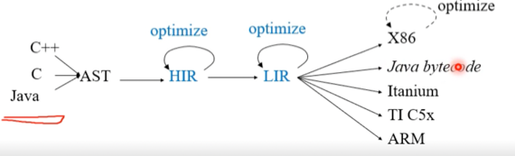
- 그리고 위에서 보는것처럼 여러 종류를 사용해 표현 - 소스코드와 가까워 보통 코드 최적화의 역할을 위한 HIR(High IR) 와 기계어에 좀 더 가까운 LIR(Low IR) 로 사용한댄다
High Level IR
- 일단 High Level과 Low Level은 상대적인 개념으로 명확하게 나누어져있는 경우도 있지만 그렇지 않은 경우도 있고 3개 이상의 IR을 사용할 때도 있댄다
- High Level IR 은 형태나 표현력은 AST와 동일하나 여기에 반복문 처리나 함수 복붙 등의 추가적인 연산을 더 해주게 된다
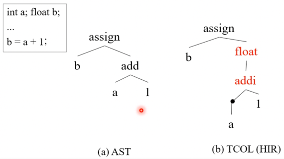
- 위처럼 변수 자료형에 맞게 변환해주는 기능도 함
- 즉, 좀 더 구체적이게 AST를 변형해 Node를 추가하게 됨
Low Level IR
- RISC같은 assembly language를 흉내낸 단순한 Instruction들로 구성된다
- 따라서 arithmetic(+logic, unary)연산, data movement(뭐 move, load, store같은)연산, 함수 call / return, goto등의 기능을 제공하는 instruction들로 구성된다
Low level IR의 종류
- N-tuple 표기법으로 표현할 수 있음 - 지금은 4-tuple인 Quadrauple 을 주로 사용한댄다
- 얘는 (연산자, 피연산자1, 피연산자2, 결과) 이렇게 4개를 튜플로 묶어 하나의 Instuction을 표현하는 것
- 이전에는 결과를 저장하지 않고 그냥 명령의 주소로 결과를 퉁치는 방법인 3-tuple방법이 유행이었으나 최적화시에 명령의 주소가 바뀌는 경우가 많아 문제가 됨
- 근데 이제 Quadruple 의 경우에는 결과를 할상 저장해야되므로 임시변수 문제가 생기게 된다
- 뭐 저장할 필요가 없는데 저장해야 되는 문제가 생긴다네 - 컴파일러 최적화하는 것으로 해결이 가능하다네
- 그리고 Tree로 표현하는 것도 가능하고 - 얘는 기계어 생성에 용이하댄다
- JVM용 언어같은 애들도 중간언어로 분류한다면 얘네들은 Stack Machine Code 라고 부른다 - 기계어와 매우 흡사함 - 뭐 AST로부터 생성이 용이하다네
Quadruple(3-address) code
- OP를 제외하고 연산자 두개와 결과를 저장할 메모리 주소 3개가 필요하므로 3-address code 라고도 불린다
- 반드시 3개여야되는건 아님 - 3개 이하여야 된다 - Unary operation은 피연산자가 한개니까
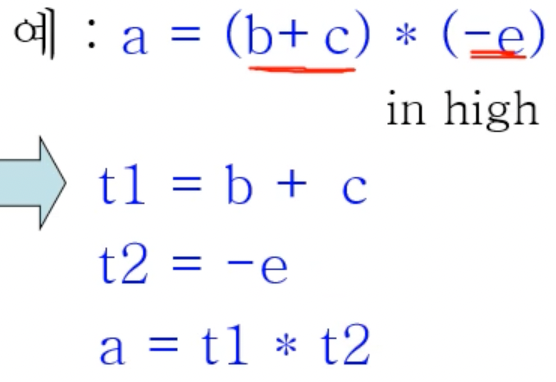
- 위처럼 HIR을 변환해서 Quadruple로 만들 수 있다
- 무조건 연산자 하나와 피연산자 두개(혹은 하나), 그리고 그의 결과로 표현하는 방식
- 여기서 t1, t2들이 임시변수 이다 - 연산 하나에 대한 결과를 임시적으로 저장해 사용하기 위한 것
Instructions
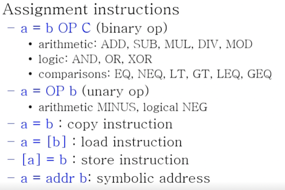
- 보면 뭐 별로 새로울건 없고
- 여기서
[]는 C언어에서*에 대응되는 dereference라고 생각하면 되고 addr는 C언어에서&에 대응되는 reference라고 생각하면 된다
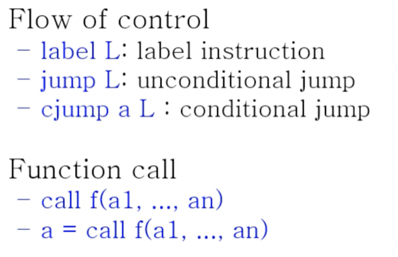
- 이전까지 봤던 Instruction들과 크게 다를건 없다
- Function call의 경우에는 인자때문에 엄밀하게는 3-address는 아니지만 여기에 포함시키기도 한댄다
- 따라서 Quadruple은 어떤 상상속의 기계에서 작동하는 Instruction이라고 생각해도 된댄다
3-Address code : GIMPLE, LLVM
GIMPLE
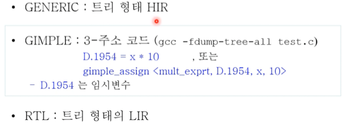
- 일단 뭐 gcc는 3개의 IR을 거쳐 컴파일하고
- GIMPLE은 gcc의 3-address 중간언어다
- 뭐 저기 보면 <>사이에 값 4개 들어가있제? Quadruple이라는 소리다
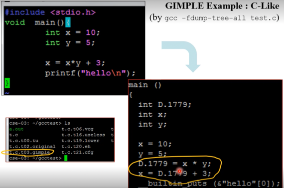
- 예시임 - GCC는 C언어를 이렇게 컴파일한다
LLVM Bit Code
- 너가 coc깔때 clangd를 llvm으로 깔았잖어 이놈이 그놈임
- clang 의 중간언어가 LLVM Bit Code이다
- 장점으로는 뭐 최적화가 잘되어있고 인터페이스가 깔끔해 Frontend와 Backend를 붙이기 좋댄다
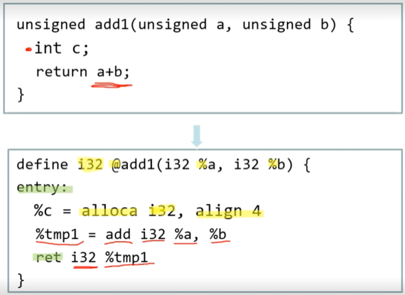
- LLVM Bit Code는 위처럼 생겼다
- i32는 자료형과 자료형 크기를 나타내는 거임 - unsigned이기 때문에 32비트 integer여서 i32인것
@는 전역변수를 나타내는 것인%는 지역변수를 나타내는 기호임- 그리고 여기서도 add쪽 보면 Quadruple을 사용하는 거 알 수 있고
- alloca는 memory allocation, align 4라는 건 4의 배수가 되는 주소에 할당하라는 소리
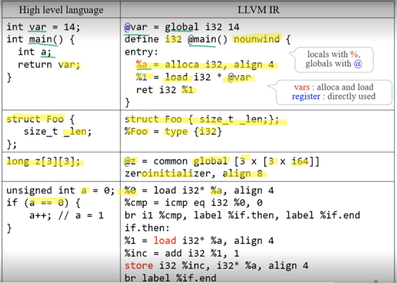
- global 은 전역변수에 대한 memory allocation이고
- nounwind 는 Exception이 발생하지 않는다는 것
- struct 선언은 선언부를 그대로 먼저 적어주고 type { i32 }는 값이 아닌 자료형이고 그 안에 i32가 하나 들어가있다는 의미
- 배열은
[숫자 X 자료형]형태로 표현되고 - zeroinitializer 는 전부 0으로 초기화
- 어쨋든 저거 읽어보면서 3-address code 번역하는거 연습해라 - LLVM은 아니어도 뭔가 번역하거나 역번역하는거 시험에 나올삘
Stack Machine Code - JVM Byte Code
- 일단 Stack Machine 은 JVM생각하면 편하다
- 가상머신으로 Stack Machine을 하나 만들고 여기에서 돌아가는 Assembly code로 컴파일한 것이 Stack Machine Code 인 것
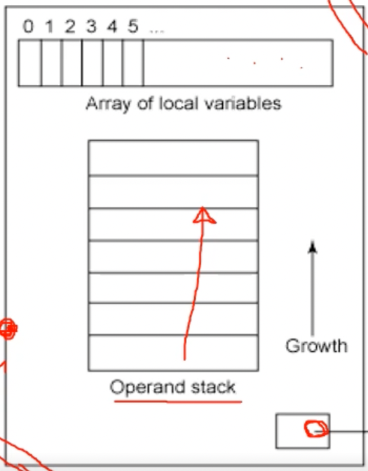
- 일단 왜 이름이 Stack Machine 이냐면 위와같은 구조때문에 그렇다
- 일단 위의 구조는 메소드 하나의 구조임
- 지역 변수는 배열 형태로 저장하고
- 오른쪽 아래 부분은 Constant pool 로 전역변수와 상수가 저장된다
- 그리고 Operand Stack 은 쉽게 설명하면 임시변수 스택이라고 생각하면 된다
- 하지만 임시변수는 생성되지 않는데 그 이유는 그냥 이 스택에 Push하면 임시값이 저장되고 Pop해서 임시값을 가져오기 때문
- 따라서 임시변수가 생성되지 않아 코드가 더 깔끔해진댄다
JVM Byte Code 예시 1
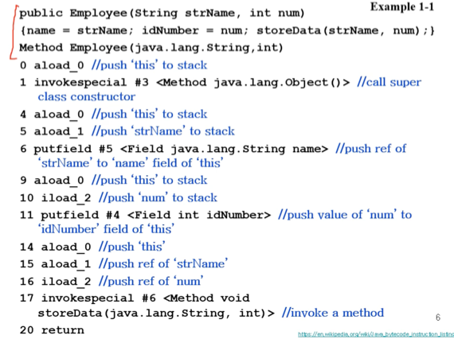
- .class 파일을 javap -c로 생성했을때 모습임
- 일단 위에 세 줄은 원래 코드 모습을 보여주는 것 - JBC읽을때 같이 보면서 읽으라고 적어놓은거
- 이부분 보면 일단 Employee 클래스에 대한 생성자 라는 것을 알 수 있다
- 그리고 <> 안에 있는 내용들도 마찬가지로 참고용으로 적혀있는것들이다
- 먼저 aload_n 은 n번 인덱스에 있는 객체를 스택에 넣으라는 것
- Array of local variables의 0번 인덱스는 무조건 this임 - aload_0 은 this를 스택에 넣으라는 것
- 그리고 무조건 this는 스택에 넣어놓고 뭔가를 한다 - 뭐 하려고 할 때마다 aload_0 이 불리는 것을 볼 수 있음
- 반대로 스택에 있던것을 배열로 옮기는 것은 store 라는 말을 사용한댄다
- 또한 iload_n 은 integer값을 스택에 넣으라는 거다 - 자료형에 따라 맨앞글자가 달라지는거임
- 그리고 invoke~ 은 메소드를 호출하는 부분임
- invokespecial 은 생성자나 private method를 호출하는거다
- #3 은 자바의 Object 클래스 생성자이다
- 생성자가 호출될때는 무조건 부모클래스의 생성자가 호출되므로 invokespecial#3 이 불려진것
- 왼쪽에 숫자는 byte를 나타내는 것
- 뭔소린가 하니 aload_0은 1바이트짜리 명령어이기 때문에 그 다음 숫자가 1이 된거고
- invokespecial도 1인데 Constant pool에 있는 애들은 byte를 더 넉넉하게 잡기 때문에 # 3이 2바이트를 먹어서 총 3바이트가 되는 것
- 따라서 그 다음 번호가 4가 되는 것이다
- 마찬가지로 putfield다음에 3이 건너뛰는 것도 이러한 이유임
- 또한 invokespecial이나 putfield같은 애들이 불리면 무조건 스택이 비워진다
- 따라서 invokespecial이후에 aload_0으로 this를 다시 넣어준다
- Array of local variable의 인덱스 1에는 첫번째 지역변수인 strName이 저장되어 있어 aload_1로 strName을 스택에 넣어줌
- putfield는 필드에 스택의 top에 있던 것을 넣으라는 거다
- #5 에는 필드 this.name이 저장되어있나봄
- 따라서 strName이 this.name으로 들어가게 된다
- 뭐 나머지는 동일한거 반복이기 때문에 읽어보면 됨
JVM Byte Code 예시 2
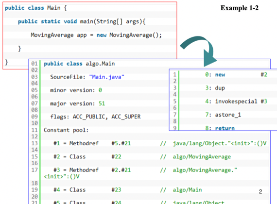
- 맨 위에는 클래스 정보와 버전에 드가있는거고
- Constant pool 에 보면 저렇게
#번호를 달고 상수들이랑 전역변수가 설정되어있는 것을 알 수 있음 - 메인함수 작동과정은
- C++에서와 동일하게 new로 Malloc을 해준 후 스택에 넣는다 - new #2 이고 #2 가 MovingAverage 클래스니까
- 그리고 new로 생성되어 스택탑에 있던걸 dup으로 복사해주고 - 스택에는 그럼 두개가 들어가는거
- invoke special #3 으로 MovingAverage 생성자 호출하고
- astore_1로 생성된 객체를 LocalArray[0] 에 넣는다
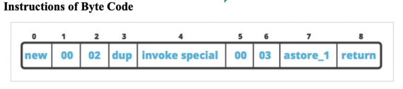
- 위 그림이 이 예제에 대한 바이트 배열 모습임
#숫자가 2바이트를 먹는다는것 - new, invokespecial같은애들 전부 Constant pool을 사용하기 때문에 2바이트가 추가된 3바이트를 먹게 된다
JVM Byte Code 예시 3
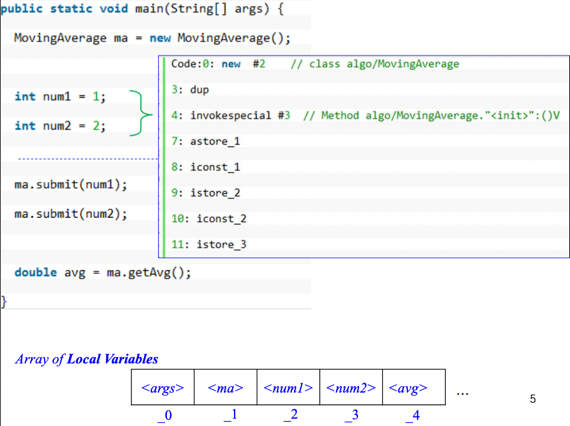
- 7번 바이트 코드까지는 예제 2번하고 동일하고
- 지역변수에 상수값을 넣는 과정은 다음과 같다
- 일단 iconst_n으로 상수를 스택에 넣는다 - i로 시작하면 integer, n에는 그 숫자가 들어감
- 그리고 istore_n으로 스택 탑에 있던 정수를 LocalArray[n] 에 넣는다
- 맨 아래 Array of local variables 그림이 있다 - 보면 뭐 맨 위에 있는거부터 차례대로 들어가있는 것을 알 수 있음
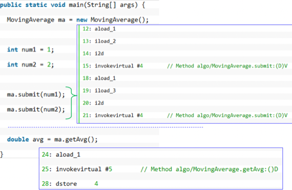
- ma.submit을 호출하기 위한 과정인데
- ma객체가 필요하므로 aload_1로 ma객체를 스택에 넣어준다
- num1 을 submit 메소드에 넣기 위해 iload_2로 스택에 넣는다
- 그리고 i2d를 통해 integer을 double type으로 바꾼다 - submit메소드는 double을 인자로 받기 때문
- 그리고 invokevirtual_#n가 public method 호출하는 부분이다
- 즉, ma.submit을 호출하게 되는 것
- 그 담에 18 19 20 21은 같은과정 반복이다
JVM Byte Code 예시 4
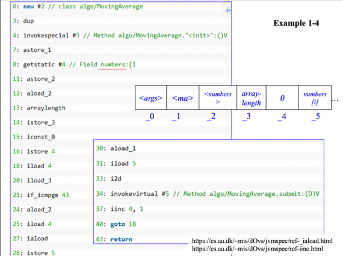
- 7번까지는 객체생성해서 지역변수에 넣어주는 것
- getstatic_#n으로 Constant pool에 있던 필드값을 스택에 넣어주게 된다
- 옆에 주석 보면 필드에 있던 배열 하나 갖고 온걸 알 수 있다
- 그리고 astore_2로 배열을 LocalArray[2]에 넣은거고
- aload_2로 배열을 다시 스택에 넣은 다음
- arraylength를 통해 스택탑에 있던게 배열이었다면 걔를 pop해서 걔의 크기를 push해준다
- istore_3으로 배열 크기를 LocalArray[3]에 저장해줌
- iconst_0으로 0을 스택에 넣고
- istore_4로 0을 LocalArray[4]에 넣고
- iload_4로 LocalArray[4]를 다시 스택탑에 넣고
- iload_3으로 배열 크기였던 LocalArray[3]을 스택탑에 넣고
- if_icmpge는 cjump같은 조건부 분기문인데 i는 int, cmp는 비교, ge는 greater or equal이라는 뜻
- 조건에 맞다면 43번 바이트코드로 분기 - return해라 이거야
- 그리고 40번까지 갔다가 다시 goto로 반복문을 도는 구조임
- 결과적으로 원본코드는 아래와 같다
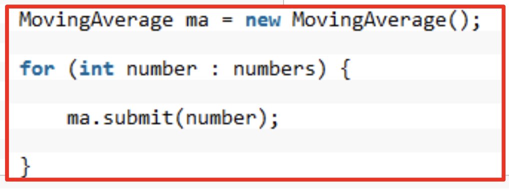
Stack Machine Code - CIL(MSIL)
- 마이크로소프트의 C# 중간언어가 CIL(Common Intermediate Language)이다
- 뭐 옛날이름은 MSIL이었댄다
- 얘도 JVM처럼 CLR(Common Language Runtime)이라는 가상머신에서 작동한다
- 근데 JVM과의 차이점은 JVM은 바이트코드를 인터프리트하는 것이 주된 일이지만 CLR에서는 VES라는 놈이 JIT컴파일이라는 과정을 거처 CIL을 기계어로 번역하는게 주된 일이고 가끔씩 인터프리트를 하게 된다
예시
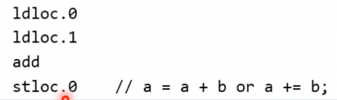
- ldloc.0은 지역변수 배열의 첫번째를 스택에 넣으라는 의미
- ldloc.1은 지역변수 배열의 두번째를 스택에 넣으라는 의미
- add를 통해 스택에 있던 두 값을 더함
- stloc.0은 지역변수 배열의 첫번째에 스택 top을 넣으라는 의미
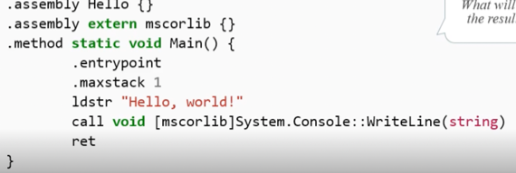
- ldstr ""으로 문자열을 스택에 넣음
- call ~로 스택에 있는 값들을 이용해 함수를 호출함
- .assembly라는 것은 자바에서 모듈처럼 버전 미스매치를 막기 위해 코드와 리소스를 한대 묶어 포장해놓은 것 - 어셈블리 하나는 그 자체로 완성본이어서 버전이 안맞아도 작동되고 다른 의존관계를 갖지 않는다는듯
Tree Code
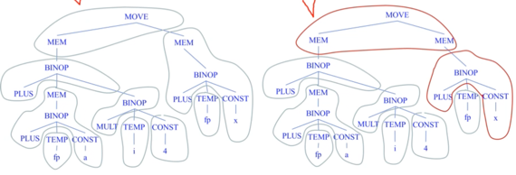
- 이거처럼 Instruction로 묶일 수 있는 것을 트리로 만든 다음에 Architecture에 따라서 묶어서 Instruction으로 번역하는 셈
- 뭔소린가함은
- CPU에서 Move to memory기능의 Instruction 밖에 지원하지 않는다면 MEM과 MOVE를 묶어 해당 Instruction으로 번역하는거고
- Move memory to memory기능의 Instruction을 지원하면 MEM, MOVE, MEM을 묶어 해당 Instruction으로 번역하는 셈
GCC RTL
- GCC의 Tree Code가 RTL(Register Transfer Language) 이다
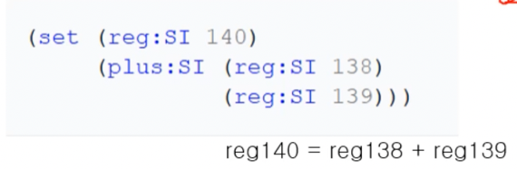
- 맨 아래 코드가 그 위에처럼 번역되고 이건 형태를 S-expression이라고 한댄다